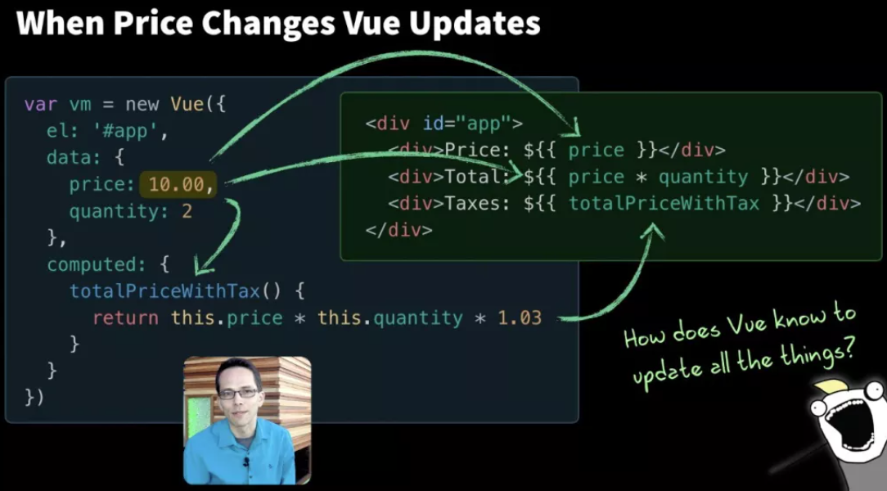
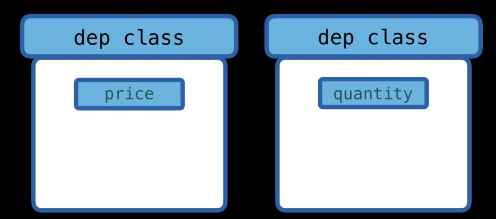
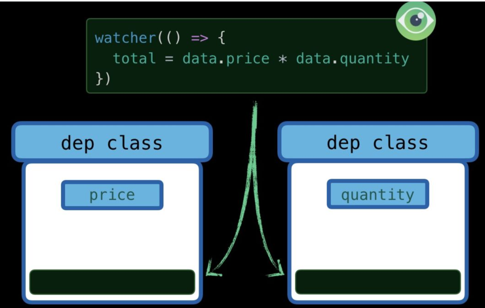
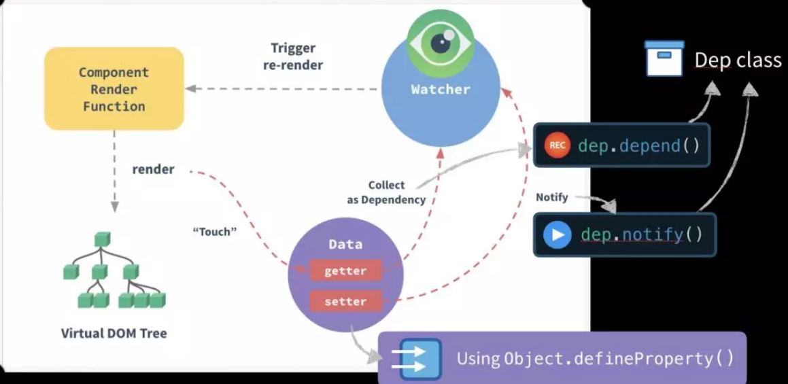

引入
很多前端 JavaScript 框架（如 Angular、React 和 Vue）都有自己的反应性（Reactivity）引擎
Vue的响应式框架
例如（Vue）：

price或者quantity的值发生变动时，Taxes的值也会发生变化- 更新 Web 页面
price的值 - 重新计算乘法表达式
price * quantity，并更新页面 - 再次调用
totalPriceWithTax函数并更新页面
- 更新 Web 页面
这并不是 JavaScript 编程通常的运行方式
一般的JavaScript代码
例如
let price = 5;
let quantity = 2;
let total = price * quantity;
console.log(total);//10
price = 20;
console.log(total);//还是10JavaScript 是过程性的，并不是反应式的，所以在现实代码并这并不可行
解决
let data = { price: 5, quantity: 2 };
let target = null;
//依赖类
class Dep {
constructor() {
this.subscribers = [];
}
depend() {
if (target && !this.subscribers.includes(target)) {
this.subscribers.push(target);
}
}
notify() {
this.subscribers.forEach((run) => run());
}
}
//为每个元素设置依赖关系
Object.keys(data).forEach((key) => {
let val = data[key];
const dep = new Dep();
Object.defineProperty(data, key, {
get() {
dep.depend();
return val;
},
set(newV) {
val = newV;
dep.notify();
},
});
});
//观察者函数
function watcher(func) {
target = func;
target();
target = null;
}
watcher(() => {
data.total = data.price * data.quantity;//依赖函数
});
//效果如下
console.log(data.total);//10
data.price = 20;
console.log(data.total);//40解析
依赖类
class Dep {
constructor() {
this.subscribers = [];//依赖函数数组
}
depend() {
if (target && !this.subscribers.includes(target))//检测依赖函数
{
this.subscribers.push(target);//添加依赖函数
}
}
notify() {
this.subscribers.forEach((run) => run());//执行所有依赖函数
}
}- 只有一个 subscribers 的实例属性（用来存放依赖函数）
- depend 函数
- 实际书写存放依赖函数的代码
- 保证依赖函数只会存放一个且存在
- notify 函数
- 根据依赖关系调整所有数据
观察者函数
function watcher(func) {
target = func;
target();
//执行依赖函数，同时初始化所有依赖关系
target = null;
}
watcher(()=>{
//数据之间的关系
})- 执行传入的函数
- 调整数据的值
- 同时触发数据的 setter getter
- 初始化依赖关系
设置setter getter （重点！）
Object.keys(data).forEach((key) => {
let val = data[key];
const dep = new Dep();
Object.defineProperty(data, key, {
get() {
dep.depend();
return val;
},
set(newV) {
val = newV;
dep.notify();
},
});
});对每一个对象的数据执行回调函数
let val = data[key];//保存初值 const dep = new Dep();//生成自己的依赖类注意每一个数据都拥有自己的依赖类

通过 defineProperty 函数设置setter getter
get() { dep.depend();//设置依赖关系 return val;//返回初值 getter函数默认行为 }, set(newV) { val = newV;//改变初值 之前的val是引用，所以直接更改 dep.notify();//根据依赖关系调整数据 },
执行依赖关系
执行完 watcher函数后，依赖类的分配会是这样的

- price quantity 的依赖类中存在依赖函数，但是total没有依赖函数
- 因为total依赖于price quantity
- price quantity改变，total改变
- total改变，price quantity不变
总结
- 通过watcher函数执行特定依赖函数
- 执行特定依赖函数时，访问各个数据
- 通过setter getter函数和依赖类（Dep）设置依赖关系
- 之后每个数据就拥有了响应式系统
Vue基本原理

- 当然，Vue 底层的处理要更复杂